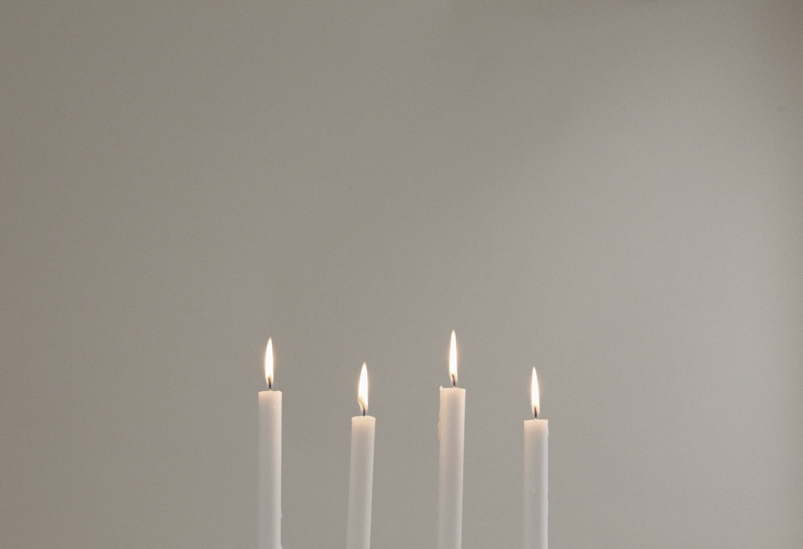

Curating the Space
It is essential for the first perspective guild member meeting that the initiators of the project curate space the meeting will be held in order to be considerate of the attendees’ time and energy. Be sure to have a unanimously agreed upon time and space to meet whether digital or in person. This is key so that the energy of the meeting will be high because every person feels they have their own autonomy when it comes to participation and they won’t be mentally halfway out the door because of other engagements. Guild meetings shouldn’t feel like 9 to 5 conferences, but rather causal time for discussion and explorations of micro issues/solutions. I would expect a guild meeting to last one and a half to two hours.
Setting Intentions

Regardless of familiarity, everyone should introduce themselves. This is a presentation of the present you and it will be nice to remember back to as your guild evolves. Each person should say their name, pronouns, why they wanted to join the intentional community, and what they need in order to maintain a healthy relationship. The time for this is variable based on the number of folks at the meeting, but do try to keep people on the subject by guiding the discussion.
Understanding Self + Whole
During this segment, participants should map out what skills they have outside of collecting capital and how they intersect. In the form of a sprout-like mindmap, branch out the areas of confidence (roots) and areas of intended growth (leaves). Making these maps should take about fifteen minutes. After the maps have been finished to the best of one’s ability, go around and share the areas of strength and growth. This will help when thinking of ways of contributing to the collective.
Being Present
Based on the skills in the group at hand, start to form roles for the members to fulfill. Many guilds have members focus on crafts that differ to allow for cross-collaboration. This is also a time for considering folks' personality types and affinities emotionally. Roles should be fluid enough that others can offer assistance when necessary.
Laying the Groundwork
Finally, now that everyone has an understanding of the skills and people in the mix there can be a couple of key goals. Perhaps they’re localized issues everyone would like to address or maybe a new medium everyone can collectively dive into. I would set a maximum of three to start and set time based measuring. It can also be nice to think of goals in a seasonal way with check-in meetings and hangouts as time continues.
Making Peace

Now that the meeting is wrapping up, think about when you all would like to return to discussion and hangout again. It might be nice to set intentions for a future meeting based on the goals set previously. Meet within the next two weeks at the latest. Remember you’re in close proximity! Don’t let your connections slip by.